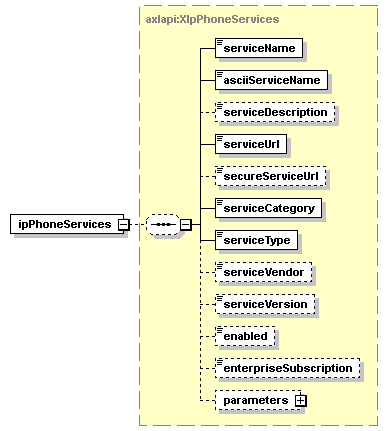

| diagram |  |
||||||||||||
| namespace | http://www.cisco.com/AXL/API/10.5 | ||||||||||||
| type | extension of axlapi:APIRequest | ||||||||||||
| properties |
|
||||||||||||
| children | ipPhoneServices | ||||||||||||
| used by |
|
||||||||||||
| attributes |
|
||||||||||||
| source | <xsd:complexType name="AddIpPhoneServicesReq"> <xsd:complexContent> <xsd:extension base="axlapi:APIRequest"> <xsd:sequence> <xsd:element name="ipPhoneServices" type="axlapi:XIpPhoneServices"/> </xsd:sequence> </xsd:extension> </xsd:complexContent> </xsd:complexType> |
element AddIpPhoneServicesReq/ipPhoneServices
| diagram |  | ||
| type | axlapi:XIpPhoneServices | ||
| properties |
|
||
| children | serviceName asciiServiceName serviceDescription serviceUrl secureServiceUrl serviceCategory serviceType serviceVendor serviceVersion enabled enterpriseSubscription parameters | ||
| source | <xsd:element name="ipPhoneServices" type="axlapi:XIpPhoneServices"/> |
XML Schema documentation generated by XMLSpy Schema Editor http://www.altova.com/xmlspy